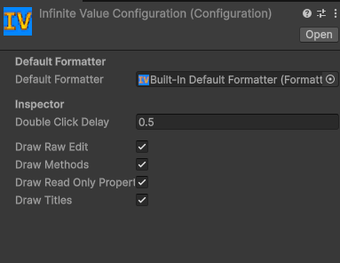

Configuration
The project-wide defaults used by InfVal and the inspector drawer.
The Configuration asset stores the project-wide defaults used by InfVal and the inspector drawer. It is created automatically on the first domain reload if it does not exist.
Open it via Tools > Infinite Value > Configuration, or find the asset at Assets/Resources/Infinite Value Configuration.

Configuration asset
Default formatter
Assign a FormatterAsset here. This formatter is used by
ToString(), Parse(), and TryParse() whenever
no formatter is supplied explicitly. A "Built-In Default Formatter" asset
(CultureFormatter) is assigned automatically when the Configuration is first created.
Inspector settings
- Double Click Delay: Maximum time in seconds between two clicks to count as a double-click (used to fold/unfold the drawer).
- Draw Raw Edit: Show the Digits and Exponent edit fields.
- Draw Methods: Show the Edit Methods section.
- Draw Read-Only Properties: Show the Properties section.
- Draw Titles: Add a title above each section in the drawer.